基于 Linux 7.0.12 内核源码 · v4l2-tpg · Test Pattern Generator · 22 种标准图形 · NumPy 实现
Linux 7.0.12 · vivid · TPGLinux 内核的 vivid（Virtual Video Test Driver）驱动内部集成了完整的 TPG（Test Pattern Generator）子系统，实现于 drivers/media/common/v4l2-tpg/。TPG 共定义 22 种标准测试图形，涵盖颜色还原、分辨率检测、几何校正、噪声评估等测试场景。
本文使用 NumPy 根据内核源码的精确颜色值（tpg_colors[] 表）重新实现全部 22 种 pattern，并附完整 Python 代码。
| 枚举值 | 名称 | 用途 |
|---|---|---|
TPG_PAT_75_COLORBAR | 75% Colorbar | 标准视频彩条（75% 幅度） |
TPG_PAT_100_COLORBAR | 100% Colorbar | 100% 幅度彩条 |
TPG_PAT_CSC_COLORBAR | CSC Colorbar | 色彩空间转换测试 |
TPG_PAT_100_HCOLORBAR | Horizontal 100% Colorbar | 水平方向 100% 彩条 |
TPG_PAT_100_COLORSQUARES | 100% Color Squares | 色块网格 |
TPG_PAT_BLACK | 100% Black | 纯黑 |
TPG_PAT_WHITE | 100% White | 纯白 |
TPG_PAT_RED | 100% Red | 纯红 |
TPG_PAT_GREEN | 100% Green | 纯绿 |
TPG_PAT_BLUE | 100% Blue | 纯蓝 |
TPG_PAT_CHECKERS_16X16 | 16×16 Checkers | 棋盘格 |
TPG_PAT_CHECKERS_2X2 | 2×2 Checkers | 2×2 棋盘格 |
TPG_PAT_CHECKERS_1X1 | 1×1 Checkers | 像素级棋盘格 |
TPG_PAT_COLOR_CHECKERS_2X2 | 2×2 Red/Green Checkers | 红绿棋盘格 |
TPG_PAT_COLOR_CHECKERS_1X1 | 1×1 Red/Green Checkers | 像素级红绿棋盘 |
TPG_PAT_ALTERNATING_HLINES | Alternating Hor Lines | 水平交替线 |
TPG_PAT_ALTERNATING_VLINES | Alternating Vert Lines | 垂直交替线 |
TPG_PAT_CROSS_1_PIXEL | One Pixel Cross | 1 像素十字 |
TPG_PAT_CROSS_2_PIXELS | Two Pixels Cross | 2 像素十字 |
TPG_PAT_CROSS_10_PIXELS | Ten Pixels Cross | 10 像素十字 |
TPG_PAT_GRAY_RAMP | Gray Ramp | 灰阶渐变 0-255 |
TPG_PAT_NOISE | Noise | 随机噪声 |
所有颜色严格遵循 drivers/media/common/v4l2-tpg/v4l2-tpg-colors.c 中的 tpg_colors[] 表（sRGB 8-bit）：
/* 75% 颜色 */
{ 191, 191, 0 }, // 黄
{ 0, 191, 191 }, // 青
{ 0, 191, 0 }, // 绿
{ 191, 0, 191 }, // 品红
{ 191, 0, 0 }, // 红
{ 0, 0, 191 }, // 蓝
/* 100% 颜色 */
{ 255, 255, 255 }, // 白
{ 255, 255, 0 }, // 黄
{ 0, 255, 255 }, // 青
{ 0, 255, 0 }, // 绿
{ 255, 0, 255 }, // 品红
{ 255, 0, 0 }, // 红
{ 0, 0, 255 }, // 蓝
{ 0, 0, 0 }, // 黑
/* CSC 颜色（跨色彩空间不过饱和）*/
{ 191, 191, 191 }, // 白
{ 191, 191, 50 }, // 黄
{ 50, 191, 191 }, // 青
{ 50, 191, 50 }, // 绿
{ 191, 50, 191 }, // 品红
{ 191, 50, 50 }, // 红
{ 50, 50, 191 }, // 蓝
{ 50, 50, 50 }, // 黑TPG_PAT_75_COLORBAR — 标准 75% 幅度彩条。8 条竖直色带依次为：白、黄(191,191,0)、青、绿、品红、红、蓝(0,0,191)、黑。视频测试最基础的 pattern，用于校验颜色空间转换、亮度和色度分离。
import numpy as np
import matplotlib.pyplot as plt
# tpg_colors 75% 颜色值（来自内核源码）
colors = [
np.array([255,255,255]), # 白
np.array([191,191, 0]), # 黄
np.array([ 0,191,191]), # 青
np.array([ 0,191, 0]), # 绿
np.array([191, 0,191]), # 品红
np.array([191, 0, 0]), # 红
np.array([ 0, 0,191]), # 蓝
np.array([ 0, 0, 0]), # 黑
]
h, w = 120, 480
img = np.zeros((h, w, 3), dtype=np.uint8)
seg = w // len(colors)
for i, c in enumerate(colors):
img[:, i*seg:(i+1)*seg] = c
plt.imshow(img, aspect='auto')
plt.axis('off')
plt.show()TPG_PAT_100_COLORBAR — 100% 幅度彩条。相比 75% 版本，黄、青、绿、品红、红、蓝均为 255 满幅度值，颜色更饱和。用于测试颜色通道的满幅响应和色域边界。
colors = [
np.array([255,255,255]), # 白
np.array([255,255, 0]), # 黄
np.array([ 0,255,255]), # 青
np.array([ 0,255, 0]), # 绿
np.array([255, 0,255]), # 品红
np.array([255, 0, 0]), # 红
np.array([ 0, 0,255]), # 蓝
np.array([ 0, 0, 0]), # 黑
]
# 绘制方法同 75% ColorbarTPG_PAT_CSC_COLORBAR — 色彩空间转换专用彩条。这 8 种颜色在所有色彩空间内均不会过饱和，确保转换测试时不会出现色域外裁剪。RGB 值之差固定为 141 (=191-50)，保证多空间转换的可预测性。
colors = [
np.array([191,191,191]), # 白
np.array([191,191, 50]), # 黄
np.array([ 50,191,191]), # 青
np.array([ 50,191, 50]), # 绿
np.array([191, 50,191]), # 品红
np.array([191, 50, 50]), # 红
np.array([ 50, 50,191]), # 蓝
np.array([ 50, 50, 50]), # 黑
]
# 绘制方法同 75% ColorbarTPG_PAT_100_HCOLORBAR — 水平方向排列的 100% 彩条。与标准彩条颜色相同，但色带沿垂直轴排列（从上到下），用于测试垂直方向的颜色处理一致性。
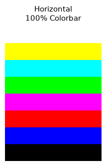
colors = [白, 黄, 青, 绿, 品红, 红, 蓝, 黑]
h, w = 240, 200
img = np.zeros((h, w, 3), dtype=np.uint8)
seg = h // len(colors)
for i, c in enumerate(colors):
img[i*seg:(i+1)*seg, :] = c
plt.imshow(img, aspect='auto')
plt.axis('off')
plt.show()TPG_PAT_100_COLORSQUARES — 色块网格。将 8 种 100% 颜色排列为 2×4 网格，用于同时评估多色块的空间均匀性和颜色一致性。
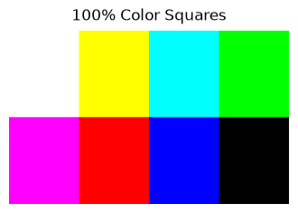
colors = [白, 黄, 青, 绿, 品红, 红, 蓝, 黑]
h, w = 240, 480
img = np.zeros((h, w, 3), dtype=np.uint8)
rows, cols = 2, 4
cell_h, cell_w = h // rows, w // cols
for i, c in enumerate(colors):
r, col = i // cols, i % cols
img[r*cell_h:(r+1)*cell_h,
col*cell_w:(col+1)*cell_w] = c
plt.imshow(img, aspect='auto')
plt.axis('off')
plt.show()纯色模式：TPG_PAT_BLACK、TPG_PAT_WHITE、TPG_PAT_RED、TPG_PAT_GREEN、TPG_PAT_BLUE。全帧填充单一颜色，用于检测坏点、亮度均匀性、颜色通道串扰和暗电流噪声。
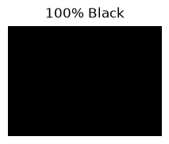
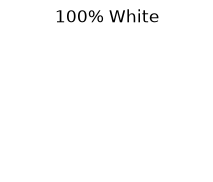
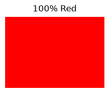
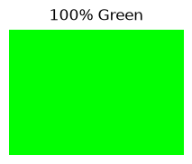
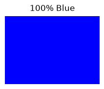
def solid(color, title):
img = np.full((120, 200, 3), color, dtype=np.uint8)
plt.imshow(img, aspect='auto')
plt.axis('off'); plt.title(title)
plt.show()
solid([255,0,0], '100% Red')
solid([0,255,0], '100% Green')
solid([0,0,255], '100% Blue')TPG_PAT_CHECKERS_16X16 / TPG_PAT_CHECKERS_2X2 / TPG_PAT_CHECKERS_1X1 — 三种尺寸的黑白棋盘格。用于检测几何失真、像素对齐和缩放算法质量。1×1 模式为像素级交替，可用于检测传感器像素缺陷。
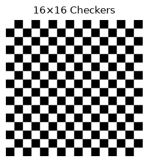
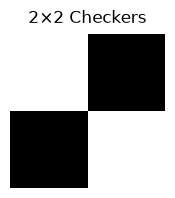
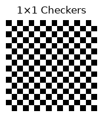
# 16×16 Checkers
n, cell = 16, 8
img = np.zeros((n*cell, n*cell, 3), dtype=np.uint8)
for r in range(n):
for c in range(n):
v = 255 if (r + c) % 2 == 0 else 0
img[r*cell:(r+1)*cell, c*cell:(c+1)*cell] = v
# 2×2 Checkers
img = np.zeros((64, 64, 3), dtype=np.uint8)
img[:32, :32] = 255; img[:32, 32:] = 0
img[32:, :32] = 0; img[32:, 32:] = 255
# 1×1 Checkers
img[::2, 1::2] = 255
img[1::2, ::2] = 255TPG_PAT_COLOR_CHECKERS_2X2 / TPG_PAT_COLOR_CHECKERS_1X1 — 红/绿双色棋盘格。使用 100% 红(255,0,0)和 100% 绿(0,255,0)替代黑白，专门用于检测颜色通道对齐和色差。
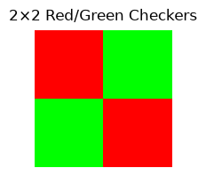
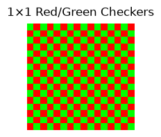
red = np.array([255, 0, 0])
green = np.array([0, 255, 0])
# 2×2 Red/Green
img = np.zeros((64, 64, 3), dtype=np.uint8)
img[:32, :32] = red; img[:32, 32:] = green
img[32:, :32] = green; img[32:, 32:] = red
# 1×1 Red/Green
img = np.zeros((16, 16, 3), dtype=np.uint8)
img[::2, 1::2] = red; img[1::2, ::2] = red
img[::2, ::2] = green; img[1::2, 1::2] = greenTPG_PAT_ALTERNATING_HLINES / TPG_PAT_ALTERNATING_VLINES — 单像素交替黑白线。用于检测隔行扫描 artifacts、抗混叠滤波效果和逐行/隔行转换质量。
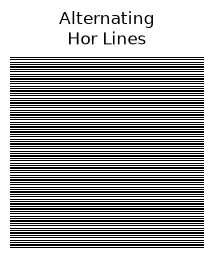
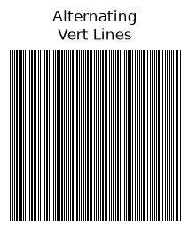
# 水平交替线
img = np.zeros((160, 200, 3), dtype=np.uint8)
img[::2, :] = 255
# 垂直交替线
img = np.zeros((200, 160, 3), dtype=np.uint8)
img[:, ::2] = 255TPG_PAT_CROSS_1_PIXEL / TPG_PAT_CROSS_2_PIXELS / TPG_PAT_CROSS_10_PIXELS — 白色背景上的黑色十字线，宽度分别为 1、2、10 像素。用于检测图像中心对齐和缩放后的线条保真度。
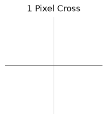
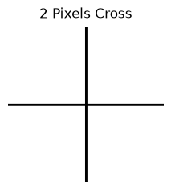
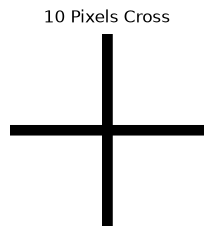
def cross(width):
img = np.ones((200, 200, 3), dtype=np.uint8) * 255
mid = 100; r = width // 2
img[mid-r:mid+r+1, :] = 0 # 水平线
img[:, mid-r:mid+r+1] = 0 # 垂直线
return img
cross(1); cross(2); cross(10)TPG_PAT_GRAY_RAMP — 256 级灰阶渐变条。从左到右依次为 0→255 的灰度值，每个灰度级占 1 像素宽度。用于验证亮度量化精度、对比度响应和显示器的 Gamma 校正。
ramp = np.tile(np.arange(256, dtype=np.uint8), (100, 1))
img = np.stack([ramp] * 3, axis=-1)
plt.imshow(img, aspect='auto')
plt.axis('off')
plt.show()TPG_PAT_NOISE — 随机噪声。每个像素的 R、G、B 通道均为 [0, 256) 范围内均匀分布的随机值。vivid 使用 get_random_u32() 内核随机数函数，此处使用 np.random.randint 模拟。用于评估编码器压缩效率、去噪算法和信道误码。
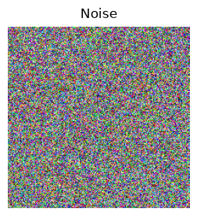
np.random.seed(42)
img = np.random.randint(0, 256, (200, 200, 3), dtype=np.uint8)
plt.imshow(img, aspect='auto')
plt.axis('off')
plt.show()drivers/media/common/v4l2-tpg/v4l2-tpg-core.c — TPG 核心实现drivers/media/common/v4l2-tpg/v4l2-tpg-colors.c — TPG 颜色表include/media/tpg/v4l2-tpg.h — TPG 枚举和数据结构